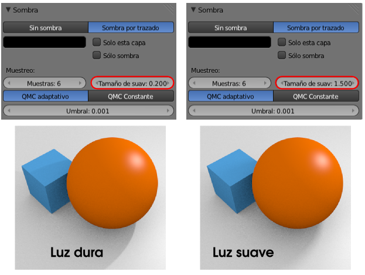

Iluminación básica
Iluminar una escena adecuadamente no es tarea de unos minutos; además este es uno de los terrenos donde más cuenta la experiencia. Pero Blender ofrece posibilidades para conseguir iluminaciones aceptables con poco esfuerzo. Se caracterizan por:
- Consumir más recursos del ordenador.
- Tener limitaciones estéticas.
Sin embargo el aprendiz encuentra en estos recursos una útil herramienta para conseguir buenos resultados antes de comenzar a estudiar las técnicas de iluminación adecuadas.
La técnica que usaremos aquí es la Oclusión Ambiental. Es un tipo de iluminación global que en realidad no necesita que haya lámparas en la escena (como en la iluminación indirecta). La luz viene de todas partes y da lugar a estéticas que se usan mucho en la actualidad en la creación de animaciones infantiles.
Se activa en el panel Mundo  .
.
En el anterior render no hay más luz que la de la Oclusión Ambiental. Es posible añadir una lámpara como la que incorpora la escena por defecto. Blender permite el uso de varios tipos de lámparas pero para comenzar nos quedamos con el de tipo Puntual (al que accedemos con el menú Añadir).
Cuando está seleccionada cuenta con su propio panel  . De todas sus opciones nos interesan sólo algunas de la botonera Sombra:
. De todas sus opciones nos interesan sólo algunas de la botonera Sombra:
- Sombra por trazado. Produce sombras arrojadas. La alternativa Sin sombra está al lado y hace que el punto luminoso consiga brillos en las objetos, ilumine... pero no produzca sobras arrojadas.
- Muestras. Una sombra en el mundo real pierde nitidez en su contorno cuanto más alejada está del objeto que la proyecta. Este parámetro le dice a Blender cuántas sombras debe calcular para definir ese contorno difuso. No abusaremos o el rendimiento del ordenador se verá afectado.
- Tamaño de suavizado. ¿Cuánto se difuminará en función de la distancia?. Este es el parámetro que lo determina. A valores altos dará la sensación de ser un día muy nublado mientras que a valores bajos la intensidad de la luz parecerá más dura. En la imagen anterior la sombra se difuminó porque el valor por defecto de tamaño de suavizado es 1. Con Muestras igual a 1 el valor de Tamaño de suavizado es intrascendente; del mismo modo que el valor de Muestras no influye si Tamaño de suavizado es 0.

El ruido de la Oclusión Ambiental
Una de las características estéticas de este tipo de iluminación es el ruido o textura granulada. Evitar ese efecto corre a cargo del parámetro Muestras de la botonera Recolección en el panel Mundo . No confundir con Muestras relacionado con el punto luminoso.

Elevar este parámetro hace que los renders sean cada vez más lentos pero a cambio la textura de la imagen se suaviza.
Iluminación básica
En Blender: 3D en la Educación siempre que hagamos referencia a que una escena tiene iluminación básica nos estamos refiriendo a:
- Oclusión ambienal activada y con Muestras:10.
- Una sola lámpara de tipo Puntual con Sombra por trazado, Muestras: 6 y Tamaño de suavizado por defecto (1.000).